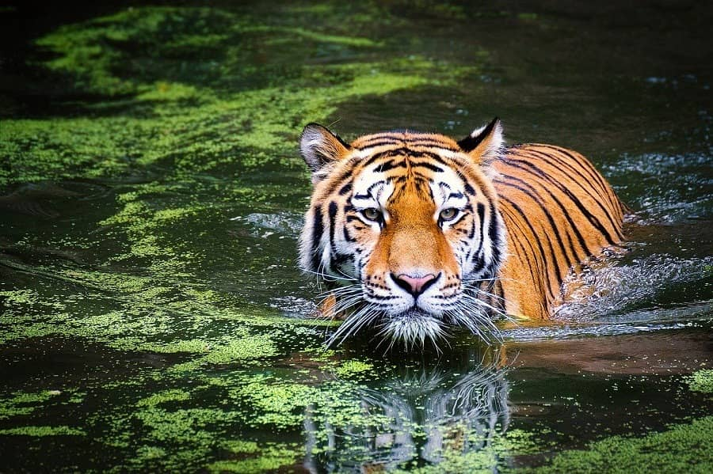
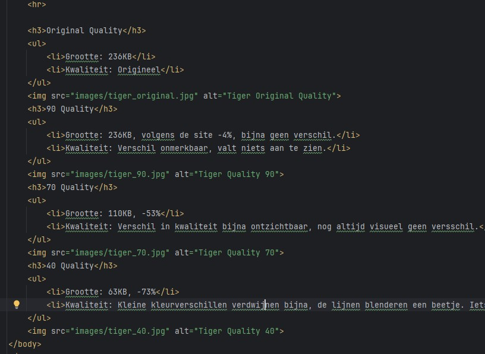
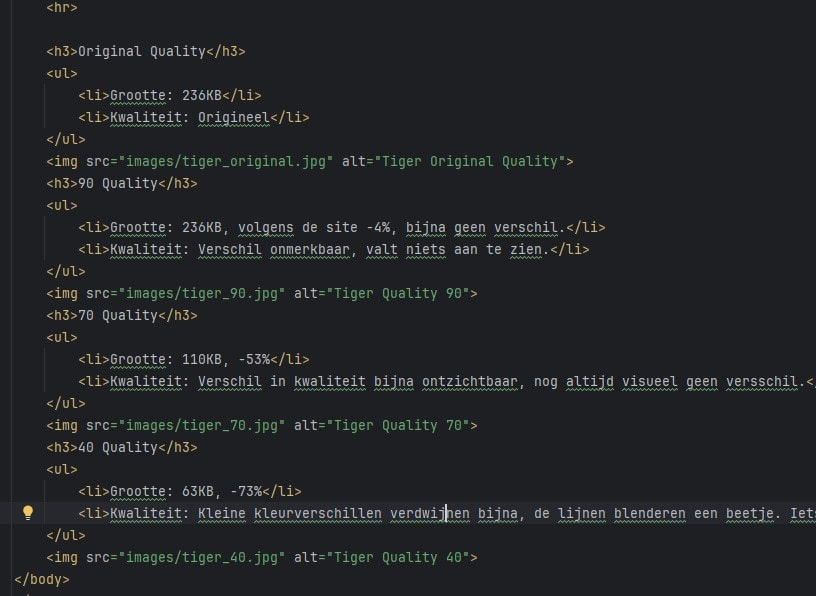
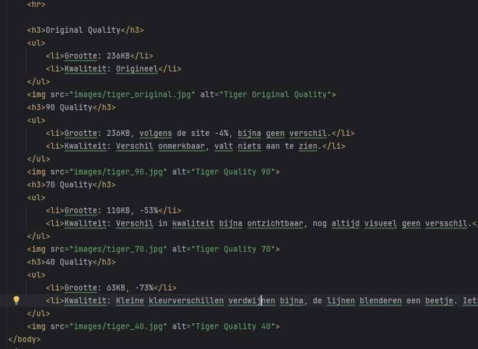

Labo 4 | Opdracht 2
Homepage
Original Quality
- Grootte: 236KB
- Kwaliteit: Origineel

90 Quality
- Grootte: 236KB, volgens de site -4%, bijna geen verschil.
- Kwaliteit: Verschil onmerkbaar, valt niets aan te zien.
70 Quality
- Grootte: 110KB, -53%
- Kwaliteit: Verschil in kwaliteit bijna ontzichtbaar, nog altijd visueel geen versschil.

40 Quality
- Grootte: 63KB, -73%
- Kwaliteit: Kleine kleurverschillen verdwijnen bijna, de lijnen blenderen een beetje. Iets minder scherp>
Uitbreiding
Original Quality

70 Quality

40 Quality

Wat nu zeer erg opvalt is dat de foto heel gepixaleerd word en heel onscherp.